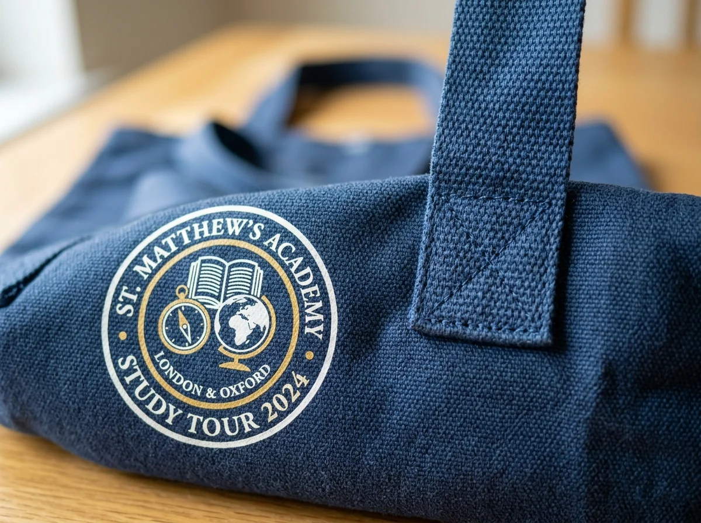

Panduan Memilih Goodie Bag Study Tour yang Praktis untuk Sekolah

Goodie bag study tour adalah tas berisi perlengkapan perjalanan edukasi yang dipilih berdasarkan kebutuhan siswa, kenyamanan membawa barang, ketahanan bahan, dan anggaran sekolah.
📌 Ringkasan Inti Panduan:
- Prioritaskan barang yang akan benar-benar digunakan siswa, bukan sekadar terlihat meriah.
- Tentukan isi terlebih dahulu sebelum memilih ukuran dan material tas.
- Sesuaikan pilihan bahan dengan durasi perjalanan, aktivitas lapangan, dan beban bawaan.
- Siapkan desain logo sekolah, jumlah pesanan akurat, serta waktu pemeriksaan hasil sebelum keberangkatan.
1. Apa Itu Goodie Bag Study Tour dan Mengapa Dibutuhkan?
Goodie bag study tour merupakan paket tas dan perlengkapan pendukung yang dibagikan kepada peserta perjalanan sekolah agar barang penting lebih mudah dibawa dan dikenali.
Dalam kegiatan kunjungan museum, wisata edukasi, observasi industri, atau perjalanan antarkota, siswa biasanya memerlukan botol minum, alat tulis, buku kecil, dan barang pribadi. Goodie bag membantu panitia mengelompokkan perlengkapan tersebut sejak awal. Jika tas diberi identitas sekolah atau acara, tampilannya juga lebih seragam dan mudah dikenali.
Namun, goodie bag tidak harus penuh dengan banyak barang. Tas yang tepat guna dengan dua atau tiga perlengkapan relevan bisa lebih bermanfaat daripada paket besar yang berisi benda jarang dipakai. Karena itu, langkah pertama adalah memahami kegiatan, kelompok usia peserta, dan kondisi perjalanan.
2. Empat Prinsip Memilih Goodie Bag yang Bermanfaat
Goodie bag yang tepat untuk perjalanan sekolah sebaiknya memenuhi empat prinsip, yaitu kegunaan, ketahanan, kemudahan membawa, dan kustomisasi identitas secara proporsional.
1. Fungsionalitas untuk aktivitas siswa
Pilih barang yang membantu aktivitas selama perjalanan. Notebook kecil dapat dipakai menulis hasil pengamatan, pulpen untuk mengisi lembar tugas, sedangkan botol minum membantu siswa membawa air minum sendiri. Jangan menambah barang semata-mata untuk membuat paket terlihat penuh.
2. Ketahanan bahan dan jahitan
Tas akan dipindahkan dari kelas ke kendaraan, dibawa berjalan kaki, lalu digunakan kembali selama kunjungan. Periksa jahitan pegangan, kekuatan sisi tas, dan bahan dasar. Bahan yang terasa tebal belum tentu memiliki konstruksi jahitan yang sesuai untuk membawa beban berat.
3. Portabilitas dan kenyamanan
Pertimbangkan lebar pegangan, volume barang, bobot ketika tas terisi, dan kemudahan menyimpannya di kendaraan. Untuk siswa usia lebih muda, ukuran yang terlalu besar dapat menyulitkan mobilitas. Untuk peserta yang banyak berjalan, tas yang ringan sering lebih nyaman.
4. Kustomisasi yang mudah dibaca
Logo sekolah, nama kegiatan, atau ilustrasi sederhana dapat memperjelas identitas rombongan. Utamakan desain yang tidak terlalu padat, warna tulisan kontras, dan posisi cetak yang tidak terpotong lipatan atau jahitan. Identitas sebaiknya mendukung fungsi tas, bukan mengurangi kenyamanannya.
3. Bahan Goodie Bag Apa yang Cocok untuk Study Tour?
Pilihan material goodie bag study tour perlu disesuaikan dengan beban barang, kondisi perjalanan, kesan visual, anggaran, serta rencana penggunaan setelah acara.
| Bahan | Karakter Umum | Penggunaan yang Cocok | Hal yang Perlu Diperiksa |
|---|---|---|---|
| Spunbond | Ringan dan ekonomis | Paket sederhana untuk banyak peserta | Ketebalan, sambungan, dan kekuatan pegangan |
| Blacu | Tampilan alami dan tekstur kain | Acara sekolah dengan desain sederhana | Ketebalan kain dan potensi menyusut bila dicuci |
| Kanvas | Relatif kokoh dengan kesan premium | Barang lebih berat dan penggunaan berulang | Gramasi, jahitan, dan berat tas kosong |
| Parasut / Taslan | Ringan, lentur, dan mudah dilipat | Perjalanan aktif dan tas cadangan | Jenis lapisan, ketahanan air aktual, dan jahitan |
| Mika | Transparan, menonjolkan isi paket | Pembagian paket yang mengutamakan tampilan isi | Kekuatan sambungan serta kenyamanan dibawa |
| Kulit sintetis | Tampilan lebih formal | Paket apresiasi panitia atau pendamping | Bobot, finishing, dan kecocokan biaya |
Tidak ada satu bahan yang pasti unggul untuk semua kebutuhan. Spunbond bisa mencukupi untuk notebook dan camilan ringan, tetapi isi yang lebih berat mungkin membutuhkan konstruksi lain. Kanvas berpotensi digunakan lebih lama, namun umumnya lebih berat. Tas parasut praktis dilipat, sedangkan ketahanan air harus dinilai dari spesifikasi bahan dan konstruksinya, bukan nama material saja.
Pembahasan lebih terarah tersedia dalam panduan pilihan bahan tas study tour yang kuat dan nyaman.
4. Apa Saja Isi Goodie Bag Study Tour yang Berguna?
Isi goodie bag study tour sebaiknya mendukung kebutuhan belajar, kenyamanan perjalanan, dan pengelolaan barang pribadi tanpa menambah beban yang tidak diperlukan siswa.
- Notebook ukuran kecil, untuk mencatat informasi dari pemandu atau hasil observasi.
- Pulpen atau pensil, agar siswa tidak perlu meminjam alat tulis ketika mengerjakan tugas.
- Botol minum, dengan kapasitas dan penutup yang disesuaikan dengan usia peserta.
- Pouch kecil, untuk menyimpan alat tulis atau barang pribadi yang mudah tercecer.
- Kartu identitas atau label tas, bila sesuai kebijakan sekolah terkait informasi pribadi.
- Camilan yang sesuai, dengan memperhatikan kebijakan sekolah, kebutuhan diet, alergi, dan penyimpanan.
- Jas hujan lipat atau barang pelindung cuaca, jika agenda dan prakiraan kondisi perjalanan membuatnya relevan.
Paket untuk siswa sekolah dasar dapat mengutamakan barang sederhana dan ringan. Untuk SMP atau SMA, perlengkapan pencatatan dan pouch penyimpanan mungkin lebih relevan. Keputusan akhir tetap bergantung pada kegiatan dan kebutuhan nyata peserta. Lihat panduan lengkap pada ide isi goodie bag study tour yang berguna untuk siswa.
5. Bagaimana Menentukan Ukuran Tas Study Tour?
Ukuran goodie bag study tour sebaiknya ditetapkan setelah panitia mengetahui dimensi barang terbesar, ketebalan seluruh isi, dan ruang tambahan untuk mengambil barang.
Mulailah dengan membuat daftar barang yang benar-benar akan dimasukkan. Ukur panjang, lebar, dan ketebalan botol minum, notebook, atau kotak makan dalam orientasi penyimpanan yang direncanakan. Setelah itu, susun barang dalam bentuk tumpukan nyata. Jika memungkinkan, buat contoh isi dan masukkan ke sampel tas sebelum produksi massal.

Tas terlalu sempit menyebabkan barang sulit dikeluarkan dan pegangan mendapat tekanan lebih besar. Tas terlalu besar tampak kosong, membuat barang mudah bergeser, dan sering kurang nyaman saat siswa berjalan. Perhatikan pula gusset atau lipatan samping/bawah karena ukuran datar tas tidak selalu menggambarkan kapasitas saat digunakan. Rujuk panduan mendalam pada cara menentukan ukuran goodie bag sekolah.
6. Cara Menyusun Paket Berdasarkan Jenis Kegiatan
Paket goodie bag yang sesuai ditentukan oleh aktivitas lapangan, kebutuhan mencatat, kondisi perjalanan, dan ketentuan sekolah terhadap barang bawaan serta konsumsi.
| Situasi Kegiatan | Prioritas Isian | Pilihan Tas yang Dipertimbangkan |
|---|---|---|
| Kunjungan museum atau sains | Notebook, pulpen, botol minum | Spunbond kuat atau kanvas ringan |
| Observasi industri atau kampus | Buku catatan, alat tulis, kartu peserta | Tote bag kanvas atau blacu |
| Wisata edukasi luar ruang | Botol minum, pouch, pelindung cuaca | Tas parasut / tas dengan penutup |
| Kegiatan dengan pembagian snack | Kotak konsumsi dan lembar panduan | Tas beralas lebar (gusset) |
7. Bagaimana Menghitung Anggaran Goodie Bag Study Tour?
Anggaran goodie bag study tour perlu dihitung dari total peserta, komponen tas, isi, biaya cetak, pengemasan, pengiriman, dan cadangan yang disepakati panitia.
Sebagai ilustrasi perhitungan: jika tas Rp12.000, perlengkapan isi Rp18.000, dan kemasan Rp2.000 per peserta, biaya dasar menjadi Rp32.000 per paket. Untuk 100 paket, biaya dasar Rp3.200.000 sebelum komponen cetak tetap, pengiriman, dan cadangan biaya. Harga aktual berbeda menurut bahan, ukuran, jumlah, teknik cetak, dan pemasok.
Untuk menghindari pengeluaran tidak perlu, kelompokkan isian menjadi wajib, berguna bila anggaran tersedia, dan sekadar dekoratif. Dahulukan kelompok pertama.
8. Bagaimana Mendesain Logo dan Identitas Sekolah pada Tas?
Desain goodie bag custom sekolah akan lebih mudah dibaca jika memakai identitas yang ringkas, ruang kosong memadai, dan teknik cetak sesuai jenis material.
Mulai dari logo sekolah atau lambang acara yang memang sudah diizinkan penggunaannya. Tambahkan nama kegiatan dan tahun jika dibutuhkan. Hindari menjejalkan daftar sponsor, slogan panjang, dan banyak elemen kecil pada bidang cetak sempit. Ukuran logo perlu diuji pada mockup dengan dimensi tas yang sebenarnya.
Sebelum menyetujui produksi, pastikan panitia memeriksa penulisan nama sekolah, tanggal kegiatan, warna utama, posisi logo, dan margin aman terhadap jahitan. Minta vendor menjelaskan hasil yang realistis untuk teknik cetak pilihan.
9. Kapan Sebaiknya Memesan Goodie Bag Study Tour?
Goodie bag study tour sebaiknya dipesan setelah jumlah peserta, daftar isi, desain, serta alamat penerimaan disepakati, dengan waktu cadangan sebelum keberangkatan.
Langkah pemesanan yang bisa diikuti panitia:
- Tetapkan jumlah peserta dan tujuan penggunaan tas.
- Tentukan isian dan perkirakan berat paket lengkap.
- Pilih bahan, ukuran, bentuk pegangan, serta model penutup bila perlu.
- Kirim logo dan spesifikasi untuk dibuatkan penawaran serta mockup.
- Periksa contoh atau detail spesifikasi sebelum menyetujui produksi.
- Konfirmasi jadwal produksi, pengiriman, dan prosedur penanganan cacat.
- Periksa jumlah, kondisi fisik, dan akurasi cetak saat barang tiba.
10. Kesalahan Umum yang Perlu Dihindari
- Memilih tas sebelum isian final. Akibatnya ukuran bisa terlalu kecil atau berlebihan.
- Mengutamakan harga satuan tanpa membaca spesifikasi. Tas yang terlihat serupa dapat berbeda dalam ketebalan, jahitan, dan metode cetak.
- Mengabaikan berat saat terisi. Siswa harus membawa keseluruhan paket, bukan tas kosong.
- Memakai desain yang terlalu ramai. Teks kecil bisa sulit dibaca, terutama pada kain bertekstur.
- Memesan terlalu dekat dengan jadwal keberangkatan. Risiko perubahan desain dan pengiriman menjadi lebih sulit dikelola.
- Tidak menyiapkan metode distribusi. Nama kelas atau kelompok dapat dibantu dengan label terpisah yang rapi.
11. FAQ Seputar Goodie Bag Study Tour
12. Kesimpulan Praktis
Goodie bag study tour yang berhasil bukan paket dengan isi terbanyak, melainkan paket yang benar-benar membantu siswa selama perjalanan. Prioritaskan fungsi dan kenyamanan, cocokkan material dengan beban, tentukan ukuran dari barang nyata, lalu tetapkan desain serta jadwal produksi yang dapat diperiksa.
Untuk mempermudah keputusan, lanjutkan membaca perbandingan bahan tas study tour, ide isi goodie bag study tour, dan panduan ukuran goodie bag sekolah.
Ditulis oleh Tim Redaksi Goodie Bag
Disusun dan dikurasi oleh tim produksi Goodie Bag Malang. Menghadirkan wawasan praktis seputar pemilihan bahan kain, teknik sablon, dan efisiensi pengadaan souvenir tas sejak 2016.
Artikel Terkait Seputar Tas Study Tour Sekolah